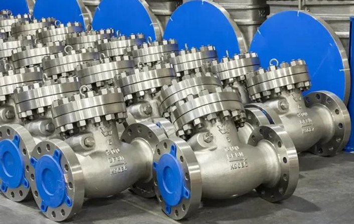
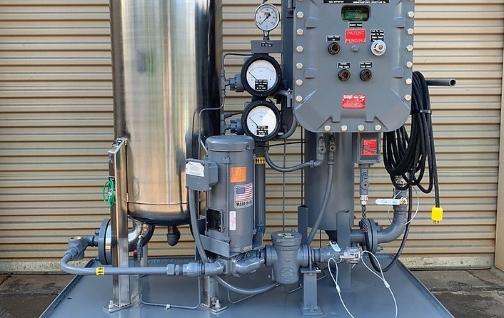
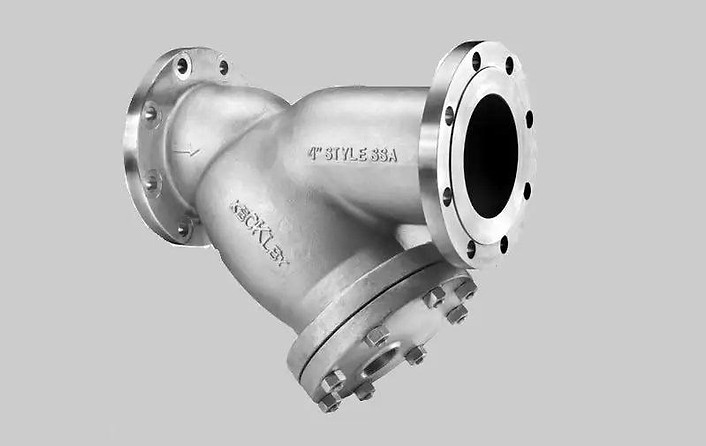
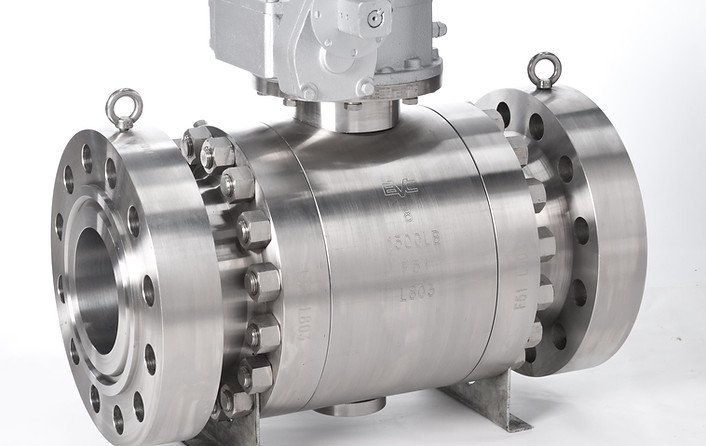

Isolation valves
Ball, gate, butterfly and knife-gate designs for dependable shut-off.
Specified for demanding power, oil and gas, water and process duties—with local product selection, documentation and quotation support from Servtech.



Select a manufacturer to explore available valve or filtration families, typical configurations and technical options.
Ball, gate, globe, check, butterfly and control valves with manual and automated configurations.
View product range →
Isolation and control valves for industrial piping systems.
View product range →Cast and forged valve solutions for critical service.
View product range →
Broad valve portfolio for power and process applications.
View product range →Oil, gas, air, dust and sintered-metal filtration products.
View product range →Servtech helps align product configuration with operating media, pressure, temperature, actuation and applicable project standards.
Ball, gate, butterfly and knife-gate designs for dependable shut-off.
Control valves, pneumatic, electric and hydraulic actuator packages.
Check, globe, pressure-reducing and regulating valve solutions.
Oil purification, separation, dust collection and sintered filter elements.
Share your datasheet, piping class, operating conditions or existing equipment details. Servtech can coordinate product selection and a project-specific commercial response.
Request product support